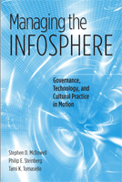

<body bgcolor="#FFFFFF" text="#000000" link="#0000FF" vlink="#CC0000" alink="#CC0000"><center><hr width="350" size="1" align="center" noshade>Comprehending the issues at stake in the networked world<hr width="350" size="1" align="center" noshade><p><a href="https://cdcshoppingcart.uchicago.edu/Cart/ChicagoBook.aspx?ISBN=9781592132799&&PRESS=temple" target="_top">Buy this book!</a> | <a href="https://cdcshoppingcart.uchicago.edu/Cart/Cart.aspx?PRESS=temple" target="_top">View Cart</a> | <a href="https://cdcshoppingcart.uchicago.edu/Cart/Cart.aspx?PRESS=temple" target="_top">Check Out</a></p><p></p></center><!--none//--><h1>Managing the Infosphere</h1>
<H2>Governance, Technology, and Cultural Practice in Motion</H2>
<h3>Stephen D. McDowell, Philip E. Steinberg and Tami K. Tomasello</h3>
<P>cloth 1592132790 $75.50, Nov 07, <FONT COLOR=#990033>Available</FONT>
<br>paper 1592132804 $27.95, Nov 07, <FONT COLOR=#990033>Available</FONT>
<br>Electronic Book 1-43990-098-1 $27.95 <FONT COLOR=#990033>Available</FONT>
<BR> 248 pp
5.5x8.25
5&nbsp;tables
</P><BLOCKQUOTE><I></i>"Managing the Infosphere<i> is accessible and welcoming. The theoretical underpinnings are clearly explicated, and strong."</i><br>&#151<b>Sandra Braman</b>, Professor, Department of Communication, University of Wisconsin, Milwaukee and author of <i>Change of State: Information, Policy, and Power</i></I></BLOCKQUOTE>
<p><i>Managing the Infosphere</i> examines the global world of communications as a mobile space that overlaps uneasily with the world of sovereign, territorial nation-states. Drawing on their expertise in geography, political science, international relations, and communication studies, the authors investigate specific policy problems encountered when international organizations, corporations, and individual users try to "manage" a space that simultaneously contradicts and supports existing institutions and systems of governance, identity, and technology.
<p>
The authors argue that the roles of these systems in cyberspace cannot be fully understood unless they are seen as mutually constituting each other in specific historical structures, institutions, and practices. With vision and insight, the authors look beyond the Internet to examine the entire networked world, from cell phones and satellites to global tourism and business travel.
<BR>&nbsp;<h2>Excerpt</h2><P>Excerpt available at <a href="http://www.temple.edu/tempress">www.temple.edu/tempress</a></p>
<BR>&nbsp;<h2>Reviews</h2>
<p><i>"McDowell, Steinberg and Tomasello present an engaging and theoretically dynamic perspective on the construction of the virtual and territorial spaces wherein technology, political-economic institutions, and cultural practices are simultaneously regulated, contested, and transformed. This is an original and path-breaking work, which offers nuanced conceptualization and engrossing case studies."</i> <br><b>&#151J. P. Singh</b>, Communication, Culture and Technology Program, Georgetown University
<p><i>"The authors have written a compelling book, one that succeeds in synthesizing the dynamics of information technology, globalization, and Internet governance. They cogently demonstrate that only through such a synthesis can these dynamics be fully grasped and adequately probed."</i> <br><b>&#151James N. Rosenau</b>, University Professor of International Affairs, The George Washington University
<p><i>"</i>Managing the Infosphere<i> exposes and explains how electronic communication and networking always consists of spaces of movement—diverse mobilities of information, capital, trade, territoriality, regimes of governance. In so doing, it forwards a constructivist perspective on space that challenges liberal notions of spatial fixity and flow by placing mobility at the heart of its analysis. </i>Managing the Infosphere<i> will be of critical interest to those concerned with how new electronic mobilities reterritorialize the world and open up new political questions concerning culture, governance and states."</i> <br><b>&#151Rob Kitchin</b>, Director of National Institute for Regional and Spatial Analysis, National University of Ireland, Maynooth
<p><i>"The main strength of this book is its strong theoretical framework.... </i>Managing the Infosphere<i> will prove useful as a foundational text for anyone who wants to explore deeply how governance, cultural practices and technology shape and territorialize the space of information – and sometimes the other way around." </i><br><b>&#151<i>Global Media Journal</i></b>
<p><i>"The book's strength lies in its cogent look at the space that hosts the virtual in order to help users understand mobile technologies--whether in applications of communication, tourism, or institution.... What is particularly impressive in this work is the authors' depth of analysis despite handling so many and varied concepts.... </i>Managing the Infosphere<i> is a stimulating book."</i><br><b>&#151<i>Journalism & Mass Communication</i></b>
<p><i>"The authors do admirably in taking a difficult and fluid topic and discussing it in such a way you can readily make sense of it.... Like any good scholarly work, this [book] offers no solutions, only cautions and insights. In that sense, </i>Managing the Infosphere<i> may prove a valuable work for scholars and researchers looking for light to help them forge the way ahead."</i><br><b>&#151<i>Technical Communication</i></b>
<BR>&nbsp;<h2>Contents</h2><P>
<br>Acknowledgements
<br>1. Managing the Infosphere
<br>2. Managing Technological Change
<br>3. Scales of Governance, Governance of Scales
<br>4. Communication Technology, Mobility, and Cultural Consumption
<br>5. Internet Names, Semiotics, and Alternative Spaces of Governance
<br>6. Fixity, Mobility, and the Governance of Internet Names
<br>7. The Infosphere: A World of Places, an Ocean of Information, or a Special Administrative Region?
<br>Notes
<br>References
<br>Index
</P><BR>&nbsp;<H2>About the Author(s)</H2>
<P><b>Stephen D. McDowell</b> is John H. Phipps Professor of Communication and Chair of the Department of Communication at Florida State University. He is the author of <i>Globalization, Liberalization, and Policy Change: A Political Economy of India's Communications Sector</i>.</P>
<P><b>Philip E. Steinberg</b> is an Associate Professor of Geography at Florida State University. He is the author of <i>The Social Construction of the Ocean</i> and co-editor (with Rob Shields) of <i>What is a City? Rethinking the Urban After Hurricane Katrina</i>.</P>
<P><b>Tami K. Tomasello</b> is an Assistant Professor in the School of Communication, East Carolina University.</P>
<BR><H2>Subject Categories</H2>
<p><A HREF="/tempress/mass_media.html" TARGET="_top">Mass Media and Communications</a>
<BR><A HREF="/tempress/political.html" TARGET="_top">Political Science and Public Policy</a>
<BR><A HREF="/tempress/geography.html" TARGET="_top">Geography</a>
</p>
<p align="center"><a href="https://cdcshoppingcart.uchicago.edu/Cart/ChicagoBook.aspx?ISBN=9781592132799&&PRESS=temple" target="_top">Buy this book!</a> | <a href="https://cdcshoppingcart.uchicago.edu/Cart/Cart.aspx?PRESS=temple" target="_top">View Cart</a> | <a href="https://cdcshoppingcart.uchicago.edu/Cart/Cart.aspx?PRESS=temple" target="_top">Check Out</a></p><p><font face="Arial" size="1"><a href="copyright.html" onMouseOver="window.status='Web Copyright Policy';return true;" onMouseOut="window.status=''" title="Web Copyright Policy">&copy;</a> 2015 <a href="http://www.temple.edu" target="new" onMouseOver="window.status='Link to Temple University home page';return true;" onMouseOut="window.status=''" title="Link to Temple University home page">Temple University</a>. All Rights Reserved. http://www.temple.edu/tempress/titles/1729_reg.html</font></p>